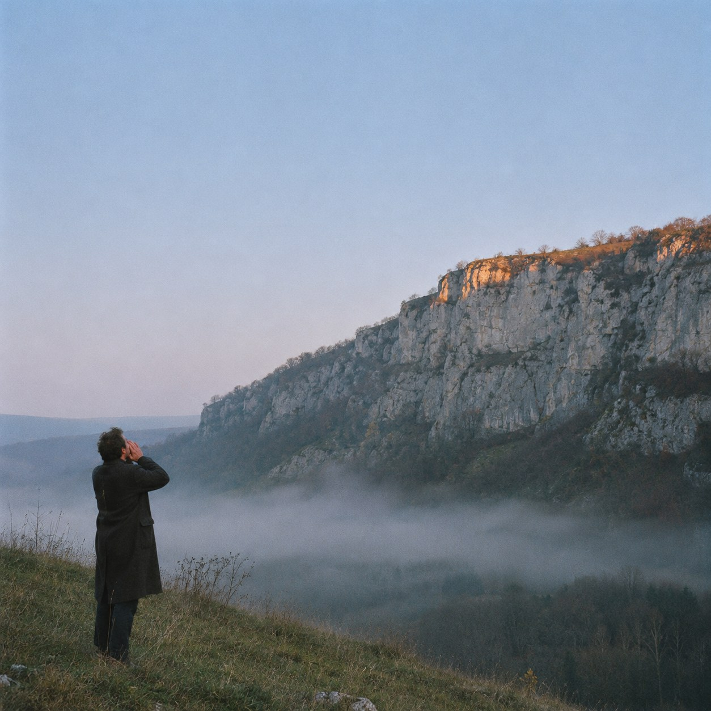
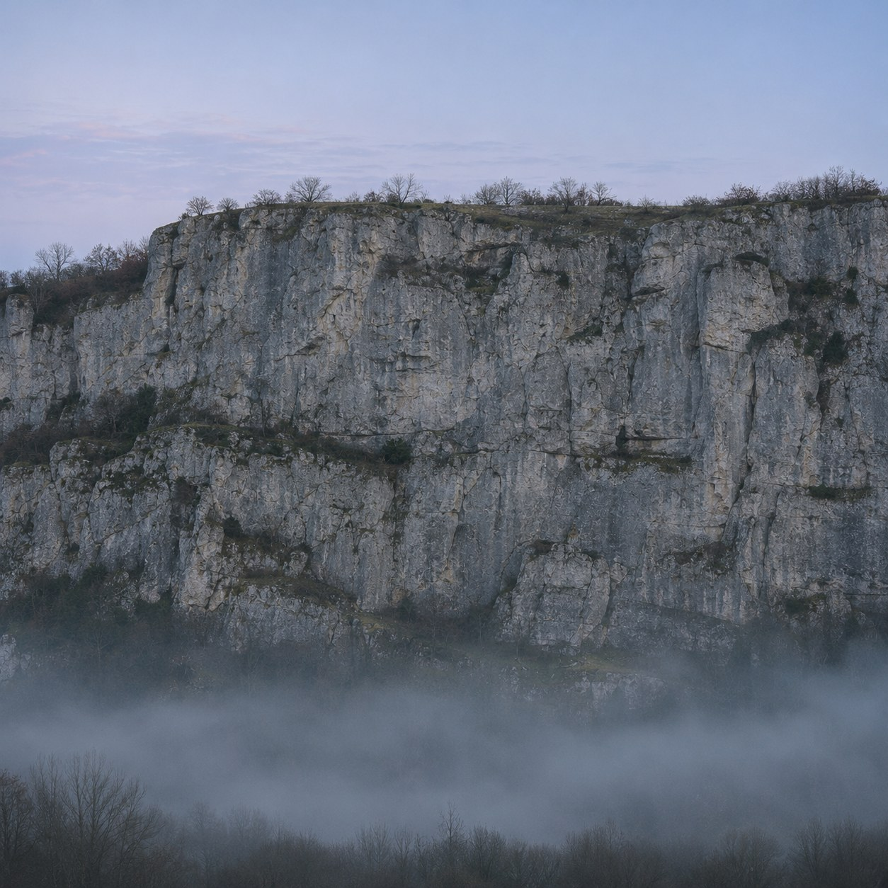

Two Seconds Away


On a hillside at dusk, facing a bare cliff across a valley, a man calls his own name once. Then he waits.
The cliff is about three hundred and fifty metres away. Sound takes a second to get there and a second to come back. For those two seconds the name is out in the air, belonging to no one, travelling. Then it arrives, a little thinner, from the other side.
This is the only way to hear your name spoken in your own voice by something that is not you. Anyone else who says it says it in their voice. The rock adds nothing. It hands back exactly what it was given, only later and further off, the way Ovid's Echo could speak only the last words of others. She had lost her own voice. The cliff never had one.
And still the name lands like an answer. It is hard not to turn toward it. For a moment the one who called is also the one being called, and the space between them can be measured: two seconds, a third of a kilometre, nothing at all.
Then the valley is quiet, and he does not call again.